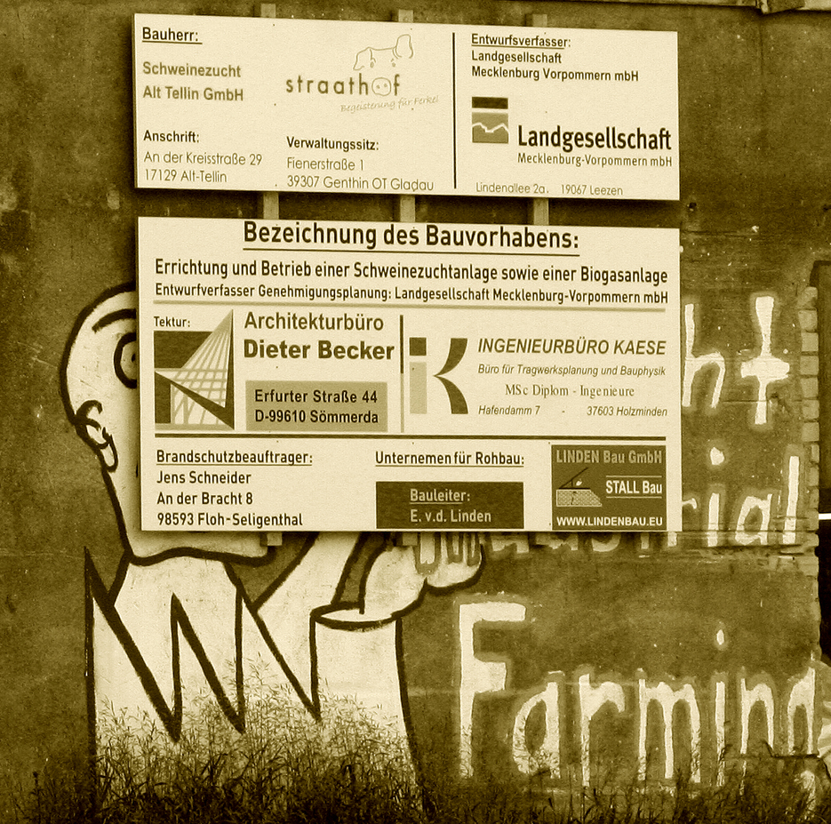
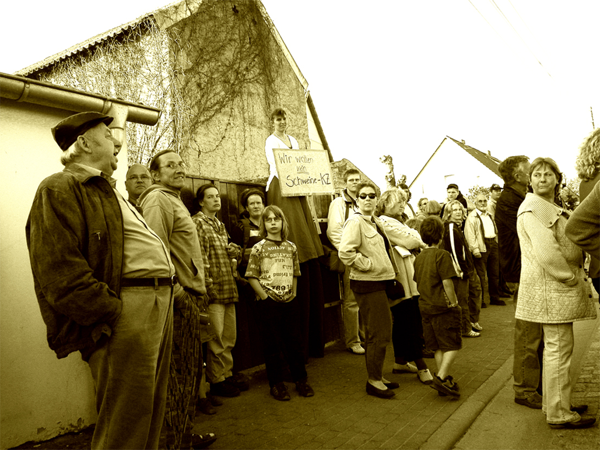

Agrar
Kulturlandschaft
Quo Vadis, Landwirtschaft in Vorpommern? „Nicht nur Umweltschützer schlagen Alarm, auch die Wissenschaft belegt es in ihrer neuesten Umwelts…
Seite lesen →Wegebau
Straßensanierung Buchholz/ Neu Buchholz Ländlicher Wegebau Mit nur einer Gegenstimme beschloss die Gemeindevertretung Alt Tellins am 24.7.20…
Seite lesen →Windkraft
Vor unserer Haustür wird ein vergrößertes Windeignungsgebiet (WEG) ausgewiesen, 20/2015 Kruckow / Alt Tellin ist sein Arbeitstitel. Auf den …
Seite lesen →Wasser
Krautung und Böschungsmahd im Tollensetal Das Tollense-Einzugsgebiet wird intensiv landwirtschaftlich bewirtschaftet. Daher gibt es hohe Näh…
Seite lesen →Fleisch & Gülle
Seite lesen →
Widerstand im Ehrenamt
In McPomm will das Land eine „Ehrenamtsstiftung“ gründen und betreiben. Offenbar ist „Ehrenamt“ für den Staat sehr lukrativ. Selbst „Pflichtaufgaben“ lassen sich schön für lau auslagern, wenn sich nur genug Idioten finden, die mit ihrem Gewissen und Interessen nicht anders können, als sich an verschiedenen Fronten für ein Schulterklopfen von den Aliens zu verausgaben. Wie die Stiftung i.G. das Ehrenamt noch produktiver machen kann, wird gegenwärtig im Land in verschiedenen bürgeroffenen Werkstätten ehrenamtlich (Bürger) und bezahlter Maßen (MP Sellering, Mitarbeiter der Staatskanzlei) erarbeitet. Beim Treffen in Anklam am 6. September gab es in der Mittagspause ein Büfett mit 3 Hauptgerichten, Obst, unzähligen Salaten und Sättigungsbeilagen. Alle aßen und tranken reichlich. Wessen Suppe ich auslöffle, dessen Lied ich sing. Am Ende wurde Dreiviertel des Essens weggekippt. In meiner Arbeitsgruppe forderte ich die Anerkennung des widerständigen Ehrenamts ein. Und führte aus, daß Ehrenamt fast immer Widerstandskampf ist: gegen Schweinefabriken, Windkraft, Straßenbau, Kinderverblödung, Fehlentscheidungen, geschützte Nazidemos und unzähliges mehr. Faktisch der Kampf des Guten gegen das Böse, verkürzt gesagt. Es geht also um die Anerkennung des Widerstands als menschlich notwendig. So solle die Ehrenamtsstiftung Widerstand fördern, trainieren, organisieren, Rechtsschutz bieten (ein netter Treppenwitz ist, daß man sich in einem Rechtsstaat vor dem Recht schützen muß...), Geräte, Autos zur Verfügung stellen, „Volksvertreter“ schulen, daß hin und wieder mal tatsächlich ein „Buttom-up“ zustande kommt bei Entscheidungen, Handlungen. Ich schlug vor, daß die Stiftung auch Kuren für Widerstandskämpfer übernehmen sollte. MP Sellering kam mir am Ende (ich blieb nicht zu „Kaffee und Kuchen“, damit sind sie ja überall auf Dummenfang, voran die Kirchen) hinterher, schnappte sich meinen Arm und griente, daß er das so zum ersten Mal hörte, eine neue Sichtweise und anderes anbiederndes. Wenige Tage später auf der MeLa, sagte er nebenher: die Idee mit dem widerständigen Ehrenamt findet er überhaupt nicht gut. Sicher kann jedermensch verschiedener Meinung sein – das ist jedoch völlig belanglos und wird genau deshalb auch überall gelehrt, propagiert, belobigt, hochgehalten Es kommt jedoch überhaupt nicht auf Meinungen an (und ihre Freiheit ist somit pillepalle), sondern auf richtige oder falsche Erkenntnisse – nur daraus kann man Schlußfolgerungen für richtiges Handeln ziehen. Ein Beispiel dafür, daß die Welt erkennbar ist, von der Meeresbiologin Antje Boetius (Bild der Wissenschaft 6/12): „Beim Aufbau einer Datenbank über Müll in der Tiefsee haben wir keine Region ohne Abfall auf dem Meeresboden gefunden. Wir haben es offensichtlich schon geschafft, den ganzen Planeten zu verschmutzen.“ Eine erkannte Tatsache. Aber wer ist „Wir“? Und daraus folgt welches Handeln? Auch LEADER funktioniert nur ehrenamtlich. Der bezahlte Überbau gibt es schriftlich und in Filmen zum Besten: „Was für eine Region, die Menschen dort gut ist, wissen die Leute allein am besten.“ Wenn es zufällig mit Staatsinteressen übereinstimmt. Was heißt „zufällig“, da lassen meinungsbildende Medien keine Fragen offen. Buttom up closes down.das Malheur
Tollensetaler Stimme 2014/09, S. 4